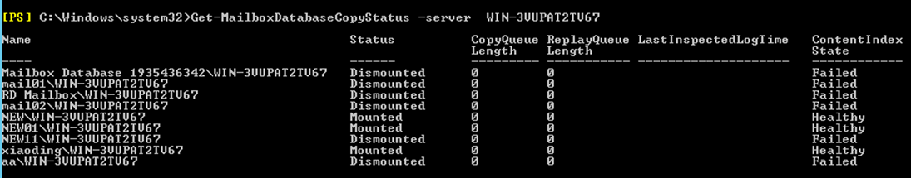

Before backing up the database, ensure that the Exchange database has been mounted and is in the normal state. You can check the database as follows:

The name of the Exchange database created by the user must comply with the Microsoft official specifications in New-MailboxDatabase.
Procedure
- Log in to the client where the Exchange Server database is located as an administrator and open Exchange Management Shell.
- Run the Get-MailboxDatabaseCopyStatus command to check the database status on the server. The following steps use server WIN-3VUPAT2TV67 as an example.
- Run the following command to query the database status:
Get-MailboxDatabaseCopyStatus -server WIN-3VUPAT2TV67
If the database status is Mounted in the command output, the database mounting status is normal.
